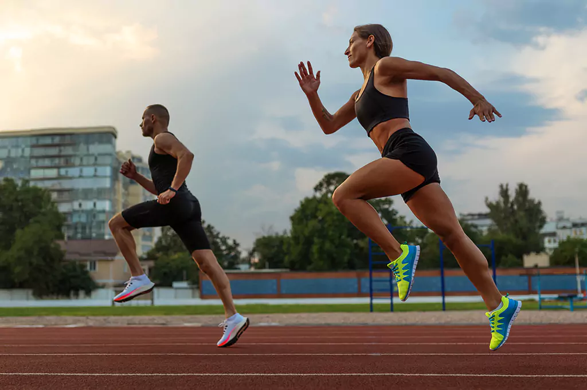

En nuestra tienda , encontrarás una amplia gama de prendas diseñadas para acompañarte en cada actividad, desde entrenamientos intensos hasta tus momentos de descanso. Ofrecemos ropa deportiva para hombre, mujer y niños, con productos que combinan comodidad, tecnología y diseño moderno. Ya sea que busques ropa para correr, hacer yoga, entrenar en el gimnasio o simplemente para un look activo diario, tenemos todo lo que necesitas para maximizar. Nuestras colecciones están elaboradas con materiales de alta calidad que favorecen la transpirabilidad y el confort, brindándote libertad de movimiento sin perder el estilo. Navega por nuestras categorías, descubre las últimas tendencias y prepárate para llevar tu actividad física al siguiente nivel. Bienvenidos a, tu nueva tienda online de ropa deportiva Premium, pensada para cada paso de tu vida activa. entendemos que el deporte es una forma de vida. Por eso, nos dedicamos a ofrecerte prendas deportivas de alta calidad que no solo te acompañarán durante tu entrenamiento, sino que también te harán sentir cómodo y seguro en cada movimiento. Ya sea que estés corriendo, practicando yoga, entrenando en el gimnasio o disfrutando de actividades ¿Por qué elegirnos? • Innovación en cada prenda : Trabajamos con • Estilo y funcionalidad : Combinamos lo • Variedad para todos : De Más que ropa, es una forma de motivación . ________________________________________ Este tipo de introducción puede generar confianza en los usuarios al brindarles una idea clara de lo que pueden esperar de su tienda, además de destacar los beneficios y la calidad de sus productos .
OBJETIVOS DEL SITIO
Ofrecer un proceso de compra ágil y sin complicaciones. incluiremos detalles de todas las prendas de alta calidad que habrá en el sitio web tendrá una amplia variedad de modo de pago Implementar un sistema de búsqueda eficiente para que los usuarios encuentren lo que buscan fácilmente (por categoría, tipo de deporte,colores,tamaños,dama, caballeros,niños,etc Habra varios diseños de ropa depende del gusto de cada persona tendra un amplio sistema de atención para cualquier tipo de detalles. AUDIENCIA
- Atletas y deportistas: Personas que practican deportes de manera regular y buscan prendas específicas para mejorar su rendimiento.
- Entusiastas al fitness:Aquellos que asisten al gimnasio o participan en actividades de acondicionamiento fisico ,buscando ropa comoda y funcional.
- Aficionados al deporte: Personas que disfrutan de actividades deportivas recreativas y quieren vestirse adecuadamente para estas.
- Personas que valoran un estilo de vida activo: Aquellos interesados en un estilo de vida saludable y que prefieren ropa que refleje esa filosofía.
- Compradores de moda deportiva: Personas que buscan ropa deportiva que también sea estilosa y esté a la moda.
- Regaladores: Amigos o familiares que buscan regalar ropa deportiva a alguien que practica deporte. La clave es ofrecer productos que se adapten a las necesidades y gustos de estas diferentes audiencias. Está dedicada a un público diverso que comparte el interés por el deporte, el bienestar y el estilo activo. Dependiendo del enfoque y la variedad de productos, el sitio puede estar dirigido a distintos segmentos de clientes. ESTA DEDICADA A ATLETAS Y DEPORTISTAS PROFESIONALES que han llevado una vida muy centrada en cuidar su salud ,su alimentación y que no solo se quedaron con la IDEA de solo ir a entrenar si no que lo llevaron a lo profesional y logrando llevar a en grande su deporte y mantener su cuerpo activo en la vida fitness POR ESO ESTA PAGINA ES DEDICADA A ELL@S QUE SON PROFESIONALES EN EL DEPORTE AMANTES DE CORER : Para estas personas que son aficionadas de salir en las mañanas a correr y disfrutan hacerlo de manera CONSTANTE
CONTENIDOS
- Inicio:
- Imágenes atractivas de productos destacados.
Ofertas especiales o promociones. Breve descripción de la marca.- Catálogo de productos:
Secciones por tipo de ropa (camisetas, pantalones, chaquetas, calzado, etc.). Filtros por actividad (running, yoga, entrenamiento, deportes de equipo). Opciones de tallas y colores.- Descripción de productos:
Fotografías de alta calidad desde diferentes ángulos. Detalles sobre materiales, tecnologías y beneficios. Guías de tallas.- Blog o artículos:
Consejos sobre entrenamiento y estilo de vida activo. Reseñas de productos. Noticias sobre tendencias en ropa deportiva.- Testimonios y reseñas:
Opiniones de clientes sobre productos. Historias de éxito de atletas o usuarios.- Sección de promociones y novedades:
Información sobre descuentos, lanzamientos de nuevas colecciones o eventos especiales.- Acerca de nosotros:
Historia de la marca. Misión y visión. Información sobre sostenibilidad, si aplica.- Contactar:
Formulario de contacto. Información de atención al cliente (teléfono, correo electrónico).- Políticas de compra y devoluciones:
Detalles sobre envío, devoluciones y cambios.- Redes sociales y comunidad:
Enlaces a perfiles en redes sociales. Invitación a unirse a la comunidad o suscribirse a un boletín. Este contenido ayuda a informar, atraer y retener a los visitantes, facilitando su experiencia de compra.